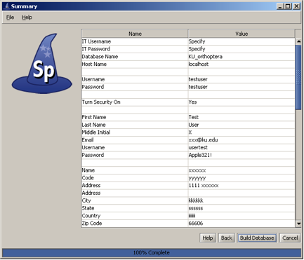

Setup Wizard |
The Setup Wizard is used to create a new, empty database within Specify. It will walk you through the creation of some very important structural elements for your Specify installation.
Before running the Wizard, it is also necessary to have installed Java and MySQL and an administrative (root) login account within MySQL which includes all MySQL permissions.
The Setup Wizard should NOT be run if collection data already exists in Specify. It creates a new, blank database and will permanently erase all existing data. The Wizard should only be run one time, for the initial setup of one collection in a Specify installation, then can be deleted from your computer.

Enter MySQL IT Username and Password
The IT user is an account with full administrator privileges in the MySQL database manager. This account does not exist within the Specify application. It should already exist by the time you reach this screen. The IT user account is used to create a “Master” Specify user in the MySQL database manager (in the next screen). If you do not know the IT admininstrator ("root") account username and password or other information for an existing MySQL installation, exit now. You can not go further without it.

Create a Master Username and Password
The security system for Specify 6 uses both a Master username and password, which Specify uses to access the MySQL Database, as well as a User username and password, which allows people to run the Specify program. The Master account has SELECT, INSERT, UPDATE and DELETE privileges on data tables in your Specify database only and has no other MySQL privileges. Specify uses only one Master username and password for all users, but encrypts the Master password with the User information, creating an encrypted string. This allows the Master information to become unique for each user.
This window creates the Master Username and Password for your Specify system. The word "Master" SHOULD NOT BE USED for the Master username or password. Please create a secret Master username and a secure, strong password for it. This information should be remembered and secured by the person installing MySQL and Specify at your institution. The Specify administrator (a role and account within Specify) will need the Master username and password to create new user accounts in Specify.
Also, the "Master" username and password should not be used as a Specify user account name within Specify. Whichever user name and password you choose for the Master account, that username and password is never used to log in to Specify.

Turn Security On/Off
Specify Security refers to the set of permissions and entitlements within Specify which gives users the rights to see certain data and to use particular functions. If your Specify database will never have more than one user, then Security (i.e. permissions within Specify) can be turned off. This will give that user total access to all Specify program functions and data. Specify will not check the user type or the user's credentials within Specify to determine the level of database and component access that user will be given.
If you will be creating multiple users within Specify it is recommended that you turn security on.

Create Specify Administrator
This account is the first Specify user account for your database, and is created at the level of Manager, the highest rank in the Specify permission model. The account usually represents the primary user, or administrator, of your collection database and will also create an Administrator within Specify. It is this username and password that will be used to log in to Specify for the first time, once this setup Wizard is finished. At that time additional users can be added within Specify. Protect the username and make the password strong. This Specify manager level information will also be used to create a record in the Specify database for an ‘Agent’ representing the same person.

Create Institution and Enter Information
The Specify data management levels mimic the common levels of hierarchy within institutions. Access to information and Specify tools are then set at the various levels both within the application and through the User Permissions.
The Setup Wizard creates a single entry for each level of the hierarchy (Institution, Division, Discipline and Collection). This is the first step in that process.
The Name should be the formal name for your institution. It is a field within the Specify database, is displayed on the Institution form, it can be queried and used in reports.
The Code is typically an acronym, codon, abbreviation or short name for your institution (not your collection), if you don't know of one, it can be skipped, and if needed, added at a later date.
The Institution Address information is also added to fields within the Specify database and displayed on the Institution form and can be queried and used in reports.

Choose Accession Level
Accessioning is the formal process by which a specimen or object is legally accepted and recorded as a museum item and differs from cataloging. Some museums and herbaria have a formal accessioning process, some do not. If your institution does not use the concept of accessions (typically handled by a registrar or administrative curator) then leave this item unchecked and simply click the Next button to proceed to the next window.
For organizations that do recognize Accessions, the process usually entails documenting proof of ownership (in the form of a signed deed of gift) and that the material was legally acquired (in the form of all associated permits - collecting, import and export). An accession usually covers an entire field trip and multiple catalog items could be included within a single accession. For the institutions that use it, accessioning and its associated numbering system is usually set up as a standard museum-wide process, backed by policy.
The accession numbering scheme or sequence can either be recorded at an Institution level for all collections (Globally) or at a Collection level. The way to do this within Specify is based on whether your institution has staff which manage all Accession transactions for your institution, like a Registrar, or if Accessions and accession numbers will be managed and assigned within one or more separate Divisions within the Institution. Again, if you do not use Accessions, this choice can be ignored. Assigning Accessions to be managed "globally" across the entire organization, will ensure that accession numbers and records are unique across all collections for the entire institution.
Note: If you choose to manage your Accessions globally you will be presented with the following window to choose a format. If you did not choose to manage your Accessions globally you will be presented with the window later in the Wizard process when you create a Collection.

Create Accession Number Format
Accession Numbers may require a format or may simply use a number. Choose None to leave the Accession Number as a text field on the Accession form.
Several formats are offered in the drop-down menu list:
AccessionNumber (2009-AA-###) The year will appear automatically in the first section (2009) of the format, and can also be manually edited. The 'AA' section of the format is alphanumeric and accepts both characters a through z and numbers. The ### section of the format is a number that is automatically incremented when Auto Numbering is turned on in Specify and manually entered when Auto Numbering is turned off. This format offers two alphanumeric characters and three incremented numbers.
AccessionNumberByYear (2009-AA-AAA) The year will appear automatically in the first section (2009) of the format, and can also be manually edited. The 'A' sections of the format are alphanumeric and accept both characters a through z and numbers. This format offers two alphanumeric sections, the first is two characters in length and the second is three characters in length.
AccessionStringFormatter (AAAAAA) This is a single alphanumeric format that accepts characters a through z and numbers. The Accession number would be seven characters in length.
To create your own format choose 'Create'. This will open the Field Formatting Editor. Click HERE for the Field Formatting Editor help page.

Configure the Storage Tree
Specify 6 visually presents some data types in hierarchical tree displays. These data types include the Taxon, Geography, (Specimen) Storage, Chronostratigraphy and Lithostratigraphy tables. There are two distinctions for trees; the first is the tree definition, or list of all the Ranks (levels) included in each tree, the second is the nodes which reside on the tree at each of these levels. The ranks must first be defined, then nodes can be added. The Wizard offers a table for each of the trees (Chronostratigraphy and Lithostratigraphy for paleo collections only) for creating tree definitions.
Nodes for the Storage tree can be added within the Specify application. The storage tree operates at the Institution level and is available to all Collections.

Create a Division
This window is used to create a single Division within your institutional hierarchy. Additional divisions can be added from within Specify.
Division
The Name will appear on the Division form and can be queried and used in reports. Example names of Divisions are Botany, Invertebrate Zoology, Entomology, etc. The Name is a field within the Specify database and is displayed on the Institution form. It and can be edited, queried and used in reports.
The Code can be a short name, acronym, codon or abbreviation. If your Division does not have a Code it can be skipped or added within Specify at a later date.

Choose a Discipline Type
Discipline
Choose a taxonomic Discipline Type from the drop-down menu. Specify uses this information to load the correct default data entry Forms, Trees and schema (tables and fields) based on the predefined disciplines within Specify.
The Name will display within Specify and can be any user specific variation of the Discipline Type. It can be edited, queried and used in reports. Additional Disciplines can be added from within Specify.

Configure the Taxon Tree
This table will create the tree definition for the Taxon tree. The Taxon tree operates at the Discipline level and can be used by all Collections within the Discipline you created in the last window.

Preload Taxon Records/Nodes
The Specify Wizard not only defines the Taxon tree but also allows loading of an authority file for your Discipline. Authority files were created using data from the Catalog of Life Project for each predefined discipline within Specify. If you choose to load the data into your tree the Taxon tree will be populated with hundreds of taxon nodes and all associated data. Then, when adding Collection Objects into your database you can simply choose a taxa from the Taxon field rather than adding each individually as needed.
Additional discipline-specific trees can be loaded from within Specify at the time new Disciplines are created.

Configure and Load Geography Tree
The Geography tree operates at the Discipline level and is used by all Collections within the Discipline.
The Wizard will automatically load data for the Geography tree, including Continents, Countries, and States throughout the world as well as Counties within the United States. Data for the Geography tree was converted from the Getty Thesaurus of Geographic Names.

Create a Collection
Enter the Name and internationally recognized Collection Code to create a single Collection within the Discipline. This is the name that will appear within Specify on the Collection form and can be queried and used in reports.
The Code should be your standard collections community assigned code for your collection. This Code will be used in data export and web interfaces in upcoming releases of Specify.
Additional collections can be added from within Specify.

Create a Catalog Number Format
Specify is able to accept data for collection objects or observations without assigning a Catalog Number. But when Catalog Numbers are used, they must be unique for each lot, specimen or observation. Many collections routinely assign catalog numbers to incoming specimens, perhaps as part of the accessioning process. These numbers may require a format with specific sections for data such as Institution Code and year or they may simply use an incrementing number.
Catalog Numbers can either be unique to each Collection, shared by several or be used throughout the Institution. The Catalog Number chosen at this time will not affect where it is used relative to other Collections, this will be configured from within the Specify application.
Collections that do not use a specific format for their Catalog Number may choose 'None' and the Catalog Number will remain a text field on the forms where it appears.
Several formats are also available within this drop-down menu list:
CatalogNumber (2009-######) The year will appear automatically in the first section (2009) of the format, and can also be manually edited. The '###' section of the format is a number that is six digits in length and automatically incremented when Auto Numbering is turned on in Specify and manually entered when Auto Numbering is turned off. These two sections are separated by a dash.
CatalogNumberAlphaNumByYear (2009-######) The year will appear automatically in the first section (2009) of the format, and can also be manually edited. The '###' section of the format is a number that is six digits in length and automatically incremented when Auto Numbering is turned on in Specify and manually entered when Auto Numbering is turned off. These two sections are separated by a dash.
CatalogNumberNumeric (#########) This is a nine digit number that is automatically incremented when Auto Numbering is turned on in Specify and manually entered when Auto Numbering is turned off.
CatalogNumberString (XXXXXXXXXX) This is a ten digit string that can include numbers, alphabet or characters.
To create your own format choose 'Create'. This will open the Field Formatting Editor. Click HERE for the Field Formatting Editor help page.
Create an Accession Number Format
Note: If you chose to manage your Accessions globally you will have already chosen a format for your accession number and will not be presented with this window again.
Accession Numbers may require a format or may simply use a number. Choose None to leave the Accession Number as a text field on the Accession form.
Several formats are offered in the drop-down menu list:
AccessionNumber (2009-AA-###) The year will appear automatically in the first section (2009) of the format, and can also be manually edited. The 'AA' section of the format is alphanumeric and accepts both characters a through z and numbers. The '###' section of the format is a number that is automatically incremented when Auto Numbering is turned on in Specify and manually entered when Auto Numbering is turned off. This format offers two alphanumeric characters and three incremented numbers.
AccessionNumberByYear (2009-AA-AAA) The year will appear automatically in the first section (2009) of the format, and can also be manually edited. The 'A' sections of the format are alphanumeric and accept both characters a through z and numbers. This format offers two alphanumeric sections, the first is two characters in length and the second is three characters in length.
AccessionStringFormatter (AAAAAA) This is a single alphanumeric format that accepts characters a through z and numbers. The Accession number would be seven characters in length.
To create your own format choose 'Create'. This will open the Field Formatting Editor. Click HERE for the Field Formatting Editor help page.

Summary Window
Congratulations! You have finished the Specify Setup Wizard. This last screen displays all the data that has been created using the information provided in the preceding windows. If edits are required simply click the Back button until the desired window displays and re-enter the information.
Click the Build Database button to create a blank database with all the necessary components to begin using your collection. Then, select the Specify application from your menus and login with your newly created Username and Password.